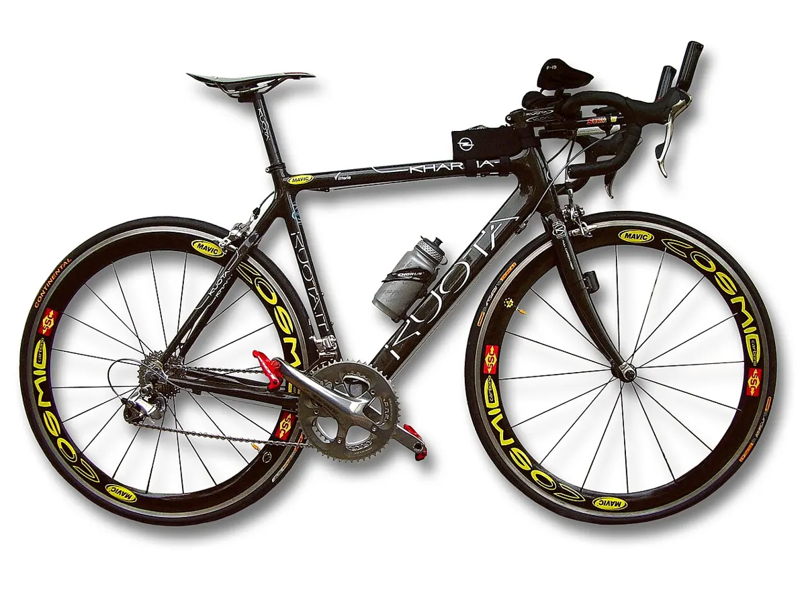

Тип велосипеда
Шоссейный велосипед
Road bike
Лёгкий и быстрый велосипед для асфальта с рулём-«бараном» и узкими шинами.
Создан для скорости на асфальте. Лёгкая рама (алюминий, карбон, сталь, титан), руль «баран» с несколькими хватами, узкие шины 25–32 мм на колёсах 700C (ETRTO 622), тормоза клещевые или всё чаще дисковые. Трансмиссия 2×11 или 2×12, у многих моделей — электронное переключение.
Подтипы: гоночные «аэро», лёгкие «для гор» (climbing), «эндьюранс» с более комфортной посадкой, разделочные (time trial) для гонок с раздельным стартом.
Отличительные черты
- Колёса 700C, шины 25–32 мм
- Руль «баран», интегрированные ручки-шифтеры
- Шоссейная трансмиссия 2× или 1×
- Вес у хороших моделей — 7–9 кг
Уход
Следите за чистотой цепи, давлением (узкие шины чувствительны), износом ободов при ободных тормозах.
